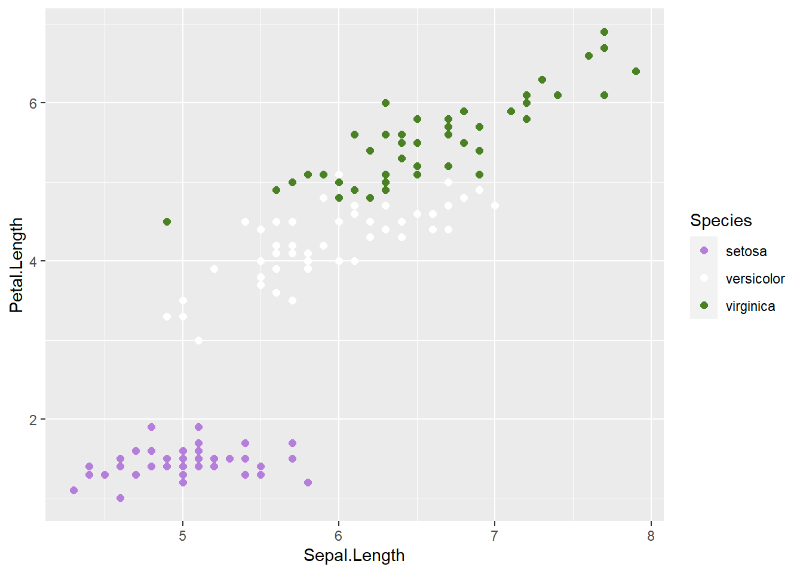
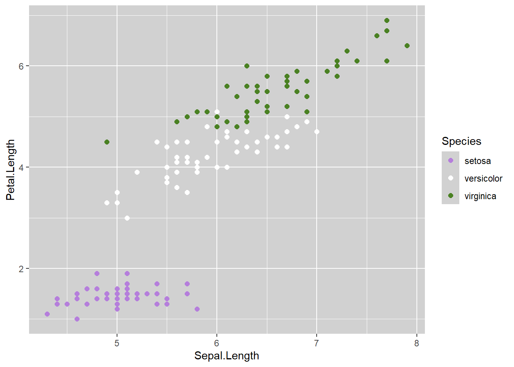
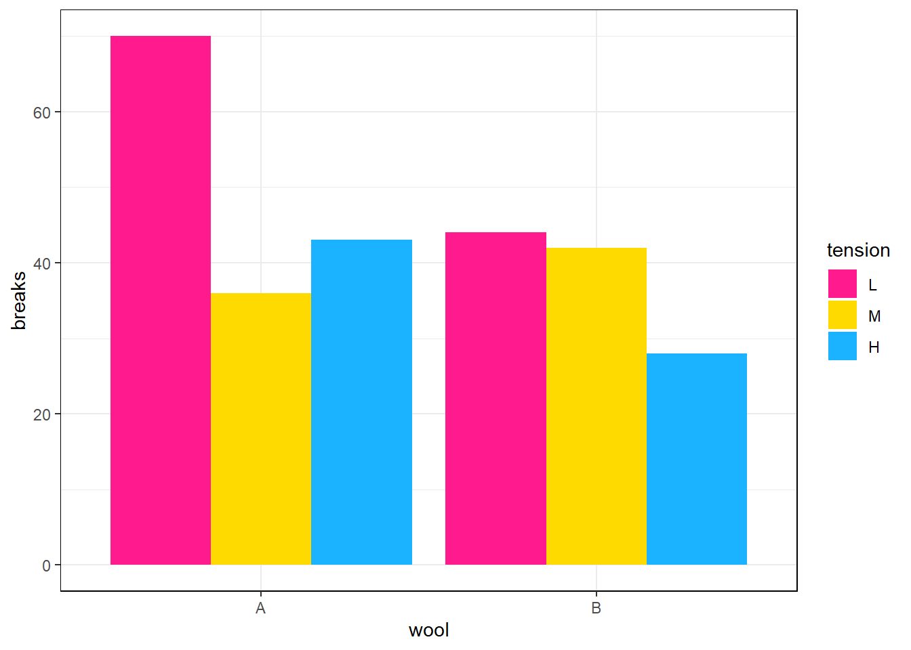

This will be a short post, since I’m busy playing blues this week. At least the topic’s short!
It all began with a post by RainbowR on Twitter:
Alright, RainbowRs, show us your blogs/websites! Quarto/distill/blogdown/whatever - we love to see it! https://t.co/SivyCaY0yi
— RainbowR (@R_LGBTQ) August 5, 2022
As a very curious person, I had to check their GitHub account. And I found a repository curiously named pridepalettes. I was a little disappointed to find out it’s just a single script with little reusability. I hoped for a package!
A quick research showed me a few more repos with pride colors, but none I could download from CRAN. In fact, only one was a package at all!
So I took matters into my own hands and created gglgbtq.
It would be easy to just scrape the colors of multiple flags, slap a palette_lgbtq() function on top of ’em, and call it a day. But it would be barely usable. Have you ever used white for a group with default ggplot2 settings? It’d be barely visible.
# I swear it's the last time I'd use iris dataset
library(ggplot2)
library(gglgbtq)
ggplot(iris, aes(x = Sepal.Length, y = Petal.Length, color = Species)) +
geom_point(size = 2) +
scale_color_manual(values = palette_lgbtq("genderqueer"))
This is why I included theme_lgbtq(). Each palette has its own custom theme for increased readability (although many themes are reused across multiple palettes). Check out the difference!
# Is it considered "another time" or just "the last use part II"?
ggplot(iris, aes(x = Sepal.Length, y = Petal.Length, color = Species)) +
geom_point(size = 2) +
scale_color_manual(values = palette_lgbtq("genderqueer")) +
theme_lgbtq("genderqueer")
The difference isn’t much, but I found this gray to be the perfect balance for most palettes that include white (which is like 85% or so of all LGBT+ flags). But there are palettes without white, like this one:
# I spent like 10 minutes sifting through the base datasets
# but - behold! - a non-iris dataset at last
ggplot(warpbreaks, aes(x = wool, y = breaks, fill = tension)) +
geom_bar(stat = "identity", position = "dodge") +
scale_fill_manual(values = palette_lgbtq("pansexual")) +
theme_lgbtq("pansexual")
For now I included 16 palettes, but expect more (and if you want a specific flag to be included in the next release, write an issue on GitHub, strike a message on Twitter, or send a pigeon with a letter):
The Pride Palettes (edition gglgbtq 0.1.0)
Like what you see? You can get it from CRAN or GitHub, whichever suits you best:
install.packages("gglgbtq")
remotes::install_github("turtletopia/gglgbtq")Show us your pride plots on Twitter, we’d love to see them!